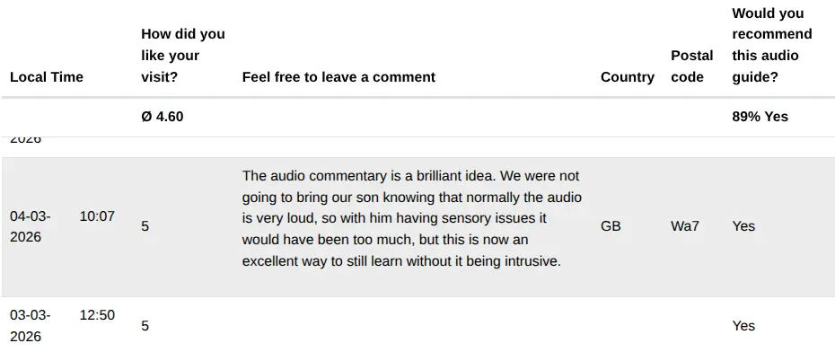
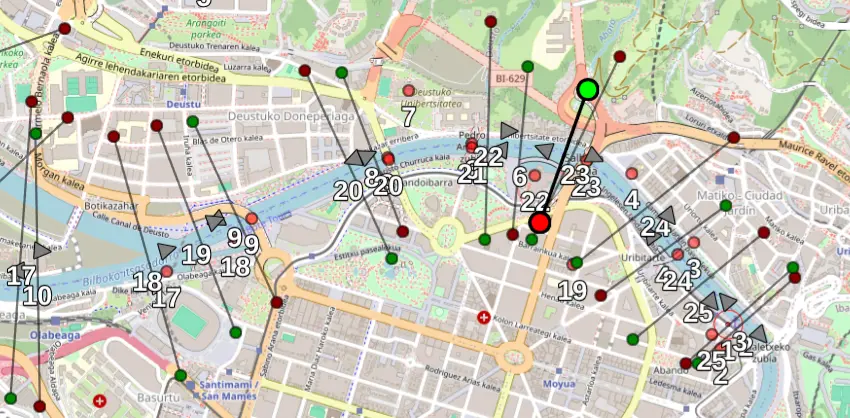

Dr. Rosa Sala
Geschäftsführung
Warum GPS-Audioguides für Schiffstouren oft scheitern — und wie man es besser löst
Wenn Sie Rundfahrtschiffe, Hop-on-Hop-off-Busse oder Bimmelbahnen betreiben, haben Sie wahrscheinlich bereits erkannt, dass smartphonebasierte Audioguides die Zukunft sind. Keine Geräte zum Ausgeben, keine Apps zum Herunterladen und keine Lautsprecheranlage, die denselben Satz in sechs Sprachen über Deck dröhnen lässt, während die Fahrgäste ernsthaft abwägen, ob die Stille unter Wasser nicht die angenehmere Alternative wäre.
Sobald man jedoch die Anbieter vergleicht, stößt man auf eine technische Hürde, für die kaum jemand eine überzeugende Lösung hat: Wie löst man Audiokommentare präzise und automatisch aus – ohne sich auf GPS-Berechtigungen zu verlassen, die vom Fahrgast ohnehin selten korrekt aktiviert werden?
In diesem Artikel beleuchten wir, warum dieses Problem komplexer ist, als es scheint, weshalb viele aktuelle Ansätze reine Notlösungen sind und wie eine wirklich belastbare System-Architektur aussehen muss.
Die akustische Zwangsbeglückung: Warum Lautsprecheranlagen Gäste vertreiben können
Der klassische Ansatz für mehrsprachige Audiokommentare ist die Bordansage. Sie funktioniert – zumindest in der Theorie. In der Praxis zwingt sie jedoch jedem Fahrgast dasselbe Erlebnis auf: in einer Lautstärke, die niemand kontrollieren kann, und oft in Sprachen, die die Hälfte der Gäste gar nicht versteht.
In der mehrsprachigen Variante wird es noch schlimmer. Jeder, der schon einmal eine Flussrundfahrt in einer Metropole gemacht hat, kennt das Prozedere: „Zu Ihrer Linken sehen Sie die alte Kathedrale.“ Pause. „On your left, you can see the old cathedral.“ Pause. „À votre gauche...“ Und so weiter. Bis die fünfte oder sechste Sprache an der Reihe ist, ist die Kathedrale längst am Horizont verschwunden. Das ist ein akustischer Geduldstest.
Es gibt außerdem eine Fahrgastgruppe, die Betreiber erstaunlich selten im Blick haben: Einheimische. Stadtbewohner könnten ihre eigenen Wasserwege am Wochenende genießen, mit einem Bier an Bord sitzen und mit Freunden den Ausblick genießen. Eine laute Lautsprecheranlage, die ihnen Dinge erklärt, die sie seit der Grundschule kennen, zerstört jedoch die Stimmung und vertreibt genau diese lokalen Gäste.
Ein Aspekt, der in der Branche oft zu kurz kommt, ist die Barrierefreiheit. Ein Fahrgast auf einem unserer Partnerschiffe hinterließ uns dazu ein Feedback, das den Nagel auf den Kopf trifft:
"Der Audiokommentar ist eine brillante Idee. Eigentlich wollten wir unseren Sohn nicht mitnehmen, da wir wussten, dass der Ton normalerweise sehr laut ist. Das wäre für ihn mit seinen sensorischen Problemen zu viel gewesen. Nun ist dies jedoch eine hervorragende Möglichkeit, trotzdem etwas zu lernen, ohne dass es aufdringlich wirkt."

Für manche Fahrgäste entscheidet ein optional nutzbarer Audioguide darüber, ob sie überhaupt an der Tour teilnehmen können. Dazu gehören Menschen mit sensorischen Empfindlichkeiten, aber auch Nutzer von Bluetooth-Hörgeräten, die den Ton direkt vom Smartphone streamen können — ganz ohne zusätzliche Hardware oder komplizierte Einrichtung. Eine klassische Lautsprecheranlage kann das nicht leisten.
Warum native Apps nicht die richtige Lösung sind
Die naheliegende Alternative zur Lautsprecheranlage ist eine native App. Mehrere Anbieter setzen darauf, und tatsächlich lösen Apps einige technische Probleme — insbesondere bei Hintergrund-GPS und Offlinefähigkeit.
Für Stadtrundfahrten und Schiffstouren bringen native Apps jedoch ein grundlegendes kommerzielles Problem mit sich: eine zu hohe Hürde beim Einstieg. Ein Tourist, der zu einer einstündigen Rundfahrt am Anleger eintrifft, möchte nicht erst den App Store öffnen, die App des Betreibers suchen, sie herunterladen, ein Konto anlegen, Berechtigungen erteilen und anschließend herausfinden, wie die Tour gestartet wird. Oft legt das Schiff bereits ab, während der Fahrgast noch mit der Einrichtung kämpft. Die Folge: Viele Nutzer brechen den Prozess schlicht ab.
Die Nutzungsraten verpflichtender App-Downloads sind bei kurzen touristischen Angeboten generell niedrig. Besonders häufig springen ältere internationale Besucher ab — also genau jene Zielgruppe, die auf europäischen Flussrundfahrten oft die Mehrheit bildet. Browserlösungen auf QR-Code-Basis umgehen dieses Problem vollständig. Fahrgäste scannen einfach den QR-Code, wählen ihre Sprache aus und hören zu. Kein Download, kein Konto, keine Einrichtung. Aus betrieblicher wie kommerzieller Sicht ist das ein entscheidender Vorteil.
Das Kernproblem GPS-basierter Browserlösungen
Ab hier wird die Diskussion technisch interessanter — und genau hier werden viele Anbieter vage oder liefern Argumente, die in der Praxis kaum standhalten.
Browserbasierte Audioguides können über die standardisierte Geolocation API auf GPS-Daten zugreifen. Theoretisch ermöglicht das automatische Trigger: Das Smartphone des Fahrgasts verfolgt seine eigene Position und sobald ein definierter Bereich rund um einen Sehenswürdigkeit erreicht wird, startet automatisch die passende Audiospur. In der Praxis ergeben sich jedoch gravierende Probleme im realen Betrieb.
Komplexe Berechtigungsebenen auf dem iPhone. Unter iOS können Standortfreigaben auf mehreren Ebenen scheitern: in den Systemeinstellungen, im Browser oder in den Website-Berechtigungen. Selbst wenn ein Fahrgast einmal auf „Erlauben“ getippt hat, kann das GPS an anderer Stelle blockiert bleiben. Da das System für den Nutzer oft oberflächlich funktionsfähig aussieht, ist eine Fehlersuche auf einem fahrenden Fahrzeug nahezu unmöglich.
Pausierte Hintergrund-Tabs im Browser. Wechselt ein Fahrgast zur Kamera-App, um ein Foto zu machen, wird der Browser-Tab im Hintergrund oft angehalten. Damit stoppt auch die Lokalisierung und das automatische Auslösen der Kommentare. Der Fahrgast kehrt zum Browser zurück und hat die Informationen zu dem Motiv, das er gerade fotografiert hat, bereits verpasst.
Unterschiedliche Gerätequalität. 40 Fahrgäste bringen 40 unterschiedliche Smartphones mit an Bord. Die Qualität der GPS-Chipsätze schwankt massiv zwischen aktuellen High-End-Geräten und älteren Budget-Modellen. Zudem unterscheidet sich die Präzision der Lokalisierung je nach verwendetem Browser erheblich — ein Faktor, auf den der Betreiber keinen Einfluss hat.
Angst vor leerem Akku. Touristen achten während eines langen Sightseeing-Tages sehr bewusst auf ihren Akkustand. Viele deaktivieren GPS vorsorglich, verweigern Standortfreigaben, schließen Hintergrund-Tabs oder aktivieren den Stromsparmodus, noch bevor die Tour überhaupt beginnt. Für den einzelnen Nutzer sind das vollkommen nachvollziehbare Entscheidungen. Zusammengenommen machen sie GPS-basierte Trigger jedoch unzuverlässig. Ein System, das auf die aktive Mitarbeit der Fahrgäste angewiesen ist, wird zwangsläufig unvorhersehbar scheitern.
Dies sind keine theoretischen Szenarien, sondern die betriebliche Realität bei Fahrzeugen, auf denen der Betreiber keine Kontrolle über die Endgeräte der Gäste hat.
Die gleichen Probleme existieren übrigens auch an Land. Ein Hop-on-Hop-off-Bus im Stadtzentrum leidet unter sogenannten Urban-Canyon-Effekten, bei denen hohe Gebäude das GPS-Signal streckenweise blockieren. Ein Touristikzug verliert in einem langen Tunnel unter Umständen minutenlang die Positionierung. In all diesen Fällen vervielfacht die Verlagerung des GPS-Problems auf die Smartphones der Fahrgäste lediglich die Fehlerquellen, statt sie zu lösen.
Und was ist mit einem WLAN-Server an Bord?
Eine andere Kategorie von Anbietern verfolgt einen hardwarebasierten Ansatz: Eine spezielle Box an Bord des Fahrzeugs erzeugt ein lokales WLAN-Netzwerk, stellt die Audiodateien direkt vom Gerät bereit und nutzt einen eigenen GPS-Empfänger, um die Audiokommentare automatisch auszulösen. Die Fahrgäste verbinden sich dabei mit dem Bord-WLAN statt mit dem mobilen Datennetz.
Dieser Ansatz löst das GPS-Problem tatsächlich zuverlässig. Das GPS läuft auf Hardware, die vom Betreiber kontrolliert wird — nicht auf den Smartphones der Fahrgäste. Dadurch entfallen Berechtigungsprobleme ebenso wie die Abhängigkeit von der Qualität einzelner Smartphone-Chipsätze. Für Strecken ohne jegliche Mobilfunkabdeckung — etwa Fjordtouren, unterirdische Flüsse oder abgelegene Bergpässe — ist das durchaus eine legitime Lösung.
Allerdings bringt sie eine Reihe von Nachteilen mit sich, die gerade für Stadt- und Hafenrundfahrten erheblich ins Gewicht fallen.
Jedes Fahrzeug benötigt eigene Hardware. Eine Flotte von zehn Schiffen bedeutet zehn Boxen, die angeschafft, installiert und gewartet werden müssen. Hinzu kommen GPS-Antennenkabel, Stromanschlüsse und gegebenenfalls Mobilfunk-Uplinks — alles Komponenten, deren Steckverbindungen sich durch die permanenten Vibrationen von Dieselmotoren mit der Zeit lösen können. Fällt die GPS-Antenne aus, stoppt das automatische Triggering sofort, bis der Fehler physisch an Bord lokalisiert wird. Die Hardwarekosten liegen in dieser Kategorie schnell bei mehreren tausend Euro pro Fahrzeug — noch bevor Installation, Content-Einrichtung und jährliche Wartungsverträge hinzukommen. Das bedeutet hohe Vorabinvestitionen, die mit jeder zusätzlichen Einheit linear steigen.
Fahrgäste müssen auf mobiles Internet verzichten. Sobald sich ein Smartphone mit einem WLAN verbindet, trennt es in der Regel die mobile Datenverbindung. Sofern die Bordhardware nicht über einen kostspieligen externen Internet-Uplink verfügt, verlieren die Fahrgäste während der gesamten Tour den Zugriff auf WhatsApp, Instagram oder Google Maps. Unter iOS wird das zusätzlich erschwert: Verbindet sich das iPhone mit einem lokalen Netzwerk ohne Internetzugang, erscheint eine Warnung mit Optionen wie „Ohne Internet verwenden“ oder „Verbindung wechseln“. Viele Fahrgäste tippen hier auf die falsche Option und verbinden sich nie erfolgreich. Andere verlassen das WLAN mitten während der Fahrt wieder, sobald sie ein Foto verschicken möchten.
Der WLAN-Beitritt als Hürde – mit entsprechender Abbruchquote. Selbst wenn das System auf restriktive Anmeldeseiten (Captive Portals) verzichtet und stattdessen ein einfaches Passwort sowie einen QR-Code verwenden, der direkt im normalen Browser geöffnet wird, müssen die Fahrgäste dennoch manuell in den WLAN-Einstellungen ihres Smartphones das richtige Netzwerk auswählen. Allein dieser Schritt — Netzwerkname suchen, antippen, auf die Verbindung warten und anschließend noch die iOS-Warnung bestätigen — sorgt dafür, dass ein relevanter Teil der Nutzer aufgibt. Besonders ältere Fahrgäste oder technisch weniger versierte Nutzer geben an diesem Punkt oft auf. Im Vergleich zum einfachen Scannen eines QR-Codes ist die Abbruchquote hier deutlich höher.
Content-Updates erfordern aktives Management. Neue Audiodateien oder kurzfristige Routenänderungen auf eine Flotte von Hardware-Boxen aufzuspielen, bedeutet oft einen hohen logistischen Aufwand. Ohne eine komplexe Remote-Infrastruktur erfordert jedes Update physischen Zugriff auf die Geräte an Bord. Eine Änderung, die in einem serverbasierten System zentral in wenigen Minuten erledigt ist, kann bei Hardwarelösungen den Besuch jedes einzelnen Schiffes notwendig machen – ein Zeit- und Kostenfaktor, der im Alltag oft unterschätzt wird.
Maritime Umgebungen sind eine Herausforderung für Hardware. Feuchtigkeit, salzhaltige Luft, Vibrationen und extreme Temperaturschwankungen setzen der Elektronik deutlich stärker zu als in klassischen IT-Umgebungen. Eine Hardware-Box auf einem Schiff altert schneller als in einem klimatisierten Serverraum – und Reparaturen oder Ausfälle mitten in der Hochsaison werden für den Betreiber schnell teuer und nervenaufreibend.
Für typische Hafenrundfahrten, Flusskreuzfahrten oder Hop-on-Hop-off-Busse, die über eine Mobilfunkabdeckung verfügen, verursacht der Hardware-Ansatz daher erhebliche Investitions- und Wartungskosten. Er bietet in diesen Szenarien keine entscheidenden Vorteile, die eine modern entwickelte Software-Architektur nicht ebenfalls liefern könnte. Der Unterschied lässt sich einfach zusammenfassen: Hardwarebasierte Systeme verlagern die Infrastruktur auf das Fahrzeug des Betreibers. Softwarebasierte Systeme verlagern sie in die Cloud des Anbieters. Wenn dort etwas aktualisiert oder gewartet werden muss, geschieht dies im Hintergrund, ohne dass der Betreiber vor Ort eingreifen muss oder den Betrieb unterbrechen muss.
GPS vollständig von den Smartphones der Fahrgäste entkoppeln
Der architektonische Ansatz, der die meisten dieser Probleme löst, ist überraschend einfach: Man hört auf, jedes einzelne Smartphone der Fahrgäste für die GPS-Positionierung verantwortlich zu machen.
Stattdessen wird die Positionierung zentral auf Betreiberseite verarbeitet und anschließend mit allen verbundenen Geräten synchronisiert. Dadurch entfällt die Notwendigkeit, dass Fahrgäste Standortfreigaben erteilen, GPS-Einstellungen verwalten oder Browser-Tabs permanent im Vordergrund geöffnet halten müssen. Die technische Komplexität bleibt dort, wo sie beherrschbar ist: beim Betreiber.
Die Fahrgäste erhalten keine GPS-Abfragen, müssen keinerlei Berechtigungen freigeben und benötigen weder ein bestimmtes High-End-Gerät noch einen speziellen Browser. Sie scannen einfach den QR-Code, wählen ihre Sprache aus – und der Audioguide startet automatisch im richtigen Moment.
Ein Fahrgast, der dieses System bei einer Hafenrundfahrt in Bilbao erlebt hat, beschrieb es mit einem Satz – vermutlich das beste Produktfeedback, das wir je erhalten haben: „Ich habe keine Ahnung, wie es funktioniert. Aber es funktioniert einfach.“
Genau diese Unsichtbarkeit ist der eigentliche Punkt. Die technische Komplexität bleibt vollständig auf Betreiberseite, wo sie kontrolliert werden kann. Für die Fahrgäste hingegen fühlt sich das Erlebnis vollkommen mühelos an.
So unterscheidet sich Nubart MOTION von anderen GPS-Kommentarsystemen:
- Das GPS läuft auf einem einzigen, vom Betreiber kontrollierten Gerät an Bord – nicht auf den Smartphones der Fahrgäste.
- Auslösezonen sind gerichtete Linien, keine Radiuskreise – das verhindert verpasste oder wiederholte Auslösungen auf festen Routen.
- Ein zeitbasierter Fallback deckt Tunnel, Brücken und andere GPS-Totzonen automatisch ab.
Hinzu kommt ein interessanter sozialer Effekt: Dadurch, dass das Triggering zentral gesteuert wird, hören alle Fahrgäste den Kommentar zur alten Kathedrale exakt im selben Moment. Alle schauen gleichzeitig nach links. Diese Synchronisierung schafft ein gemeinsames Erlebnis – etwas, das Lautsprecheranlagen zwar durch Zwang erzeugen, GPS-Systeme auf einzelnen Smartphones jedoch kaum zuverlässig hinbekommen, da jedes Gerät leicht zeitversetzt reagiert.
Die Auslieferung der Audiodateien erfolgt technisch entkoppelt vom Triggering. Die Inhalte werden bereits beim ersten Scannen des QR-Codes auf die Smartphones vorgeladen. Dadurch läuft die Wiedergabe selbst dann stabil weiter, wenn das Schiff unter einer Brücke hindurchfährt, einen Tunnel passiert oder einen Abschnitt mit Funklöchern durchquert. Sobald die Verbindung abreißt, befindet sich der benötigte Content bereits auf dem Endgerät. Nubarts Offline-Ansatz wurde gezielt für Situationen entwickelt, in denen die Konnektivität nicht dauerhaft fehlt, sondern zeitweise instabil ist.
Wie Triggerzonen funktionieren: Linien statt nur Kreise
Die meisten GPS-basierten Systeme definieren Triggerzonen als Radien rund um eine Sehenswürdigkeit. Sobald das Fahrzeug in diesen Kreis einfährt, startet der Audiokommentar. Für klassische Stadtrundgänge funktioniert das durchaus, da die Richtung, aus der sich Besucher nähern, unvorhersehbar ist. Für Fahrzeuge auf festen Routen ist dieses Prinzip jedoch vergleichsweise unflexibel und ungenau.
Eine deutlich präzisere Alternative sind sogenannte gerichtete Triggerlinien: virtuelle Linien, die an einer bestimmten Stelle quer über die Wasserstraße oder Fahrbahn gelegt werden. Sobald das Schiff oder Fahrzeug diese Linie überquert, wird der entsprechende Audiokommentar ausgelöst. Da die Linie eine definierte Ausrichtung besitzt, erkennt das System zudem, aus welcher Richtung sie überfahren wird.

Gerade bei Schiffstouren mit Hin- und Rückfahrt ist das in der Praxis entscheidend. Eine Triggerlinie kann so konfiguriert werden, dass sie nur auf der Hinfahrt aktiviert wird. Dadurch wird verhindert, dass derselbe Audiokommentar auf dem Rückweg erneut abgespielt wird. Alternativ kann der Betreiber für die Rückfahrt einen anderen Track definieren, wenn die Sehenswürdigkeit nun aus der entgegengesetzten Perspektive sichtbar ist. In diesem Fall löst dieselbe Linie richtungsabhängig unterschiedliche Inhalte aus. Klassische Radiuskreise bieten diese Differenzierung nicht.
Wenn GPS allein nicht ausreicht: zeitbasierte Fallbacks
Selbst mit einem optimal positionierten dedizierten GPS-Gerät führen manche Routen durch Bereiche, in denen das GPS-Signal tatsächlich unzuverlässig ist. Häuserschluchten, Brücken, Tunnel oder bestimmte abgeschirmte Hafenbereiche können die Positionierung lange genug unterbrechen, um Trigger zu verpassen.
Die Lösung hierfür ist ein hybrides Triggering: GPS-basierte Auslösung auf dem Großteil der Strecke, kombiniert mit zeitgesteuerten Sequenzen als Fallback für bekannte Problemzonen. Der Betreiber definiert dabei vorab die Abschnitte, in denen das GPS potenziell instabil ist. Innerhalb dieser Zonen arbeitet das System mit zeitbasierten Übergängen, statt auf ein GPS-Ereignis zu warten, das unter Umständen nie eintrifft. In Kombination mit vorgeladenen Offline-Inhalten entsteht so ein System, das auch unter schwierigsten Bedingungen zuverlässig funktioniert – ganz ohne manuelle Eingriffe durch den Kapitän oder die Crew.
Welche Fragen Sie Anbietern vor Vertragsabschluss stellen sollten
Der Markt für GPS-gesteuerte Audioguides wächst rasant. Oft macht es die Marketing-Sprache schwer zu erkennen, welche Lösungen in der Praxis wirklich robust sind – und welche von Faktoren abhängen, die außerhalb Ihrer Kontrolle liegen. Bevor Sie sich entscheiden, sollten Sie gezielt folgende Fragen stellen:
Wo läuft das GPS? Lautet die Antwort „auf dem Smartphone jedes einzelnen Fahrgasts“, sollten Sie hellhörig werden. Fragen Sie nach, was passiert, wenn Standortfreigaben nur teilweise aktiviert sind oder der Nutzer zur Kamera-App wechselt. Die Qualität dieser Antwort verrät viel über die Praxiserfahrung des Anbieters.
Wie werden die Triggerzonen definiert? Radiuskreise sind die einfachste Form, aber oft zu unpräzise. Fragen Sie nach gerichteten Triggerlinien – für feste Routen auf Schiffen und Bussen sind diese fast immer die bessere Wahl.
Welche Fallback-Lösungen gibt es bei Signalverlust? Jeder Anbieter, der behauptet, GPS funktioniere auf dem Wasser immer und überall lückenlos, hat vermutlich noch nie eine reale Flusstour begleitet.
Muss der Fahrgast aktiv zur Funktionalität beitragen? Die Antwort sollte „Nein“ lauten. Wenn Gäste Browser-Tabs offen halten, Standortfreigaben managen oder den Ruhemodus des Bildschirms verhindern müssen, sind das keine Features, sondern operative Risiken.
Läuft das System bereits seit Jahren im realen Betrieb? Eine Demo im Büro ist einfach. Der Einsatz über eine ganze Saison auf echten Routen mit echten Fahrgästen ist der einzige relevante Härtetest.
Nubart MOTION basiert konsequent auf dem in diesem Artikel beschriebenen Ansatz: Eine vom Betreiber kontrollierte Einheit übernimmt die gesamte GPS-Positionierung. Gerichtete Triggerlinien ersetzen unpräzise Radiuskreise, und eine hybride GPS-/Zeitsteuerung garantiert selbst in Gebieten mit schlechter Konnektivität eine lückenlose Wiedergabe.
Für Ihre Fahrgäste bedeutet das: kein App-Download, keine Standortfreigaben und keinerlei technische Hürden. Das System ist bereits bei zahlreichen Betreibern in Europa über mehrere Saisons hinweg im regulären Live-Betrieb erprobt.
Wenn Sie derzeit verschiedene Lösungen für Ihre Schiffs- oder Fahrzeugflotte evaluieren, konfigurieren wir gerne eine individuelle Demo auf Ihrer tatsächlichen Route – völlig unverbindlich. Bestellen Sie eine Demo hier.